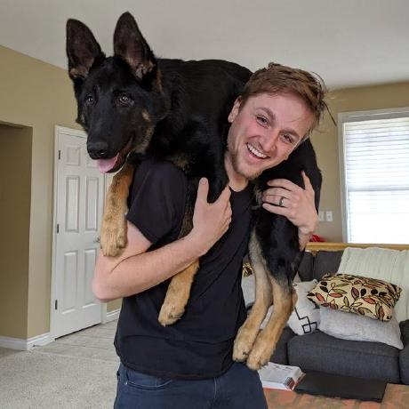

Board of Directors

TJ DeVries (Chairman)
As a visionary software developer and charismatic leader, TJ now pioneers as the esteemed chairman of the HTMX Foundation.

Future Board Member
This board member will need to be wildly capable to keep up with all the demands of being a guardian of hypermedia.
Future Board Member
This board member will only need to be mostly capable, since the other board member is going to be wildly capable.